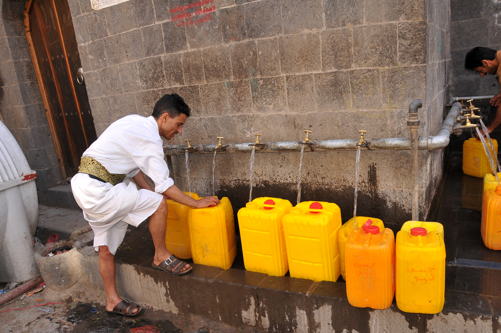
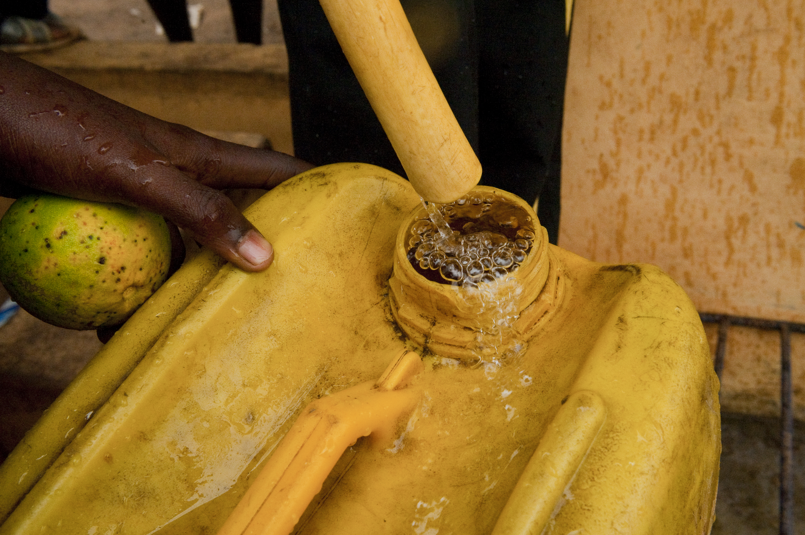

Availability of clean drinking water is key to healthy living and must be made available to all people, but there is inequality when it comes to safe drinking water.
In this report, we use 2024 statistics from the World Bank database indicator (People Using Safely Managed Drinking Water Services - SH.H2O.SMDW.ZS). Six countries have been chosen for this comparison. In order to calculate percentages without access, we subtracted the percent of access from 100%. Comparison of countries is for illustration only and does not represent all countries.
D2 · Editorial Figures


D3 · Accessible Data Table
| Country | Region | With Access(%) | Without Access(%) |
|---|---|---|---|
| Belgium | Europe | 100% | 0% |
| Sweden | Europe | 100% | 0% |
| United States | North America | 98% | 2% |
| Bangladesh | South Asia | 59% | 41% |
| Ethiopia | East Africa | 14% | 86% |
| Chad | Central Africa | 6% | 94% |
Sources: World Bank, Percentage of people using safely managed drinking water services, 2024. Indicator: SH.H2O.SMDW.ZS. Percentages of those without access calculated by deducting the access percentages from 100.
D4 · Responsive SVG
Source: World Bank, 2024. People using safely managed drinking water services (% of population). Indicator: SH.H2O.SMDW.ZS.
Data Sources
- World Bank Water Quality: A Foundation for Health and Development
- World Bank Safely Managed Drinking Water Indicator
- WHO/UNICEF Joint Monitoring Programme
Image Credits
Both photographs are licensed under Creative Commons Attribution-NonCommercial-NoDerivatives 2.0 . Photos are credited to their respective photographers.
- Sana'a, Yemen Photo by Foad Al Harazi / World Bank. Original photo
- Woukpokpoe, Benin Photo by Arne Hoel / World Bank. Original photo
Data Transformation
Access rates to safe drinking water were obtained by deducting each country’s access rate to safe drinking water from 100 percent. Values are rounded off to whole percentages for convenience.
AI Disclosure
AI assistance was utilized in the creation of the SVG chart in terms of design and coding and also in the organization of sources and images in one documentation part. Suggestions were also offered by the AI during the creation process. The topic and sources were chosen by me, the information was evaluated and the design was decided upon.